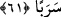

hicret etmedikçe de maksûduna eremez.” ‘Kendisini ittibâ silsilesine bağlayacak ve
kalbinden perdeleri kaldıracak bir üstâdı olmayan kimse, bu işte babası belirsiz buluntu
ve nesebi meçhul çocuk gibidir. Bâyezid Bistâmî (k.s.): “Şeyhi olmayanın şeyhi
şeytandır.” der.
Mesnevî’de der ki:
Pîri bul ki bu yolculuk pîrsiz
Pek tehlikeli, pek korkuludur, âfetlerle doludur.
et-Te’vîlâtü’n-Necmiyye’de der ki: “Âyette şu hususlara işaret vardır:
1. Yolcu, kendisine bir yol arkadaşı bulmalı sonra yola çıkmalıdır.
2. Yol arkadaşlarından biri emir, diğeri tâbî olmalıdır.
3. Arkadaşına niyetini ve yolculuk amacını açıklamalı, sefer hâlindeki konaklama
sürelerini haber vermelidir. Böylece o da onun hallerine vâkıf olsun, şâyet ona tâbî
olmaya karar verirse ona yol arkadaşlığı yapsın.
4. Sâdık tâlibin niyeti şeyhin talebi doğrultusunda olmalıdır. Maksûduna ulaşıncaya ve
muradına erinceye kadar ondan ayrılmaması, ona tâbi olması gerekir. Çünkü şeyhin
talebi hakîkatte Allah Teâlâ’nın talebi demektir.”
61. Her ikisi, iki denizin birleştiği yere varınca balıklarını unuttular. Balık,
denizde bir yol tutup gitmişti.
Kâşifî der ki: “Mûsâ (a.s.): “Ey Yûşa, bu sâlih kulu arama konusunda sen bana
muvafakat göster.” dedi. Yûşa (a.s.): “ben sana muvafakat ediyor ve seninle yolculuğu
ganimet biliyorum.” dedi.”
Hoştur şöhret veren bir kimseye yoldaş olmak
Yûşa (a.s.) birkaç ekmek ve bir balık hazırladı, Mûsâ (a.s.) ile yola revan oldu. İkisi
yürüyerek gittiler. “Her ikisi, iki denizin birleştiği yere varınca” Yâni, iki denizin
uzunlamasına birleştiği yerin ortasına yakın bir yere varınca…
Kâşifî der ki: “İki denizin birleştiği yerde bir kayanın üzerine oturdular. O kayanın
kenarında hayat pınarı vardı. Mûsâ (a.s.) uykuya daldı, Yûşâ (a.s.) o pınardan abdest
aldı. O sudan bir damla kızartılmış balığın üzerine damladı. Balık derhal dirildi ve
denize gitti. Yûşâ (a.s.) hayrette kaldı. Mûsâ (a.s.) uyanınca Yûşâ (a.s.)’ın ve balığın
durumunu sormadı. Hemen yola koyuldu. Yolculuk konusunda çok acele etmekten”
“balıklarını unuttular.” Halbuki o balığın unutulması, aranan kimseyi bulmanın işâreti
kılınmıştı. Mûsâ (a.s.), arkadaşına balığı hatırlatmayı unuttu. Arkadaşı da Mûsâ (a.s.)’a
onun durumunu haber vermeyi unuttu. Sahîhayn’daki hadiste unutmanın gence (uşağa)